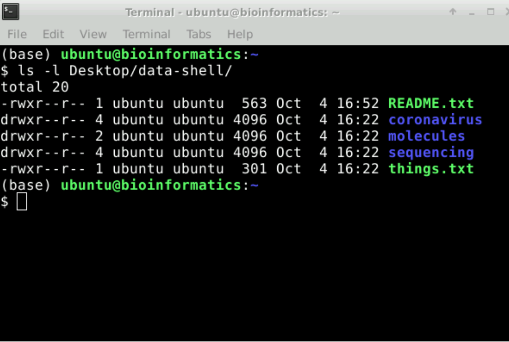

Frequently Asked Questions
This document compiles answers to questions asked frequently during our live courses, and is hopefully helpful as a reference.
Shell 101
What is a kernel and what is a shell?
The kernel is the core component of an operating system (OS). The shell is the user interface that interacts with the kernel.
What are some common shells?
The “Bourne shell” (bsh) was the first default shell on Unix systems. bash stands for “Bourne again shell” and is an extension of the Bourne shell. If you’re a Mac user, you may see the beginning of your terminal line says zsh, standing for the “Z shell”, which is another shell created as an extension for bsh.
Terminal Syntax, Shortcuts, and Quick Fixes
What do I do if the terminal seems stuck or I want to cancel a command?
If you mistakenly wrote a command and want to cancel or if you launched a command and for some reason, the command is “stuck” or taking too long to run, then you can do Ctrl + C and see whether the cursor returns to your usual command line.
I don’t see the $ at the beginning of the line anymore, what can I do?
Ctrl + C aborts the current task and returns control to the user.
What do the different text colours in terminal mean?
Every terminal environment looks different and the colour scheme varies in different terminal systems. The first part, such as username@machine:~$ in green displays your username, the name of the computer, the location (or folder) in the filesystem where you are currently.

How can I autocomplete names of folders/paths in the terminal?
You can use the Tab key to autocomplete names of folders/paths. If there are multiple files with the same beginning, eg: Desktop and DesktopFolder, it will autocomplete until the “p” in Desktop as that is the end of the common string (please remember the terminal is case-sensitive). It will not autocomplete further until it sees a character that would make one name different from the other. You can press “Tab” twice to see what options you have to autocomplete. In this case, you could type DesktopF and then use the “Tab” key to autocomplete to DesktopFolder.
How can I re-run previously run commands without typing them out again?
If you press the up arrow key multiple times it will give you the last commands you have run in historical order.
Is there any merit to using an absolute path or a relative path over the other?
Often, when working on projects, it may be preferable to use relative paths as it makes one’s code more “portable”. For example, if this is Person A’s folder structure:
/home
|_ hugot
|_ Documents
|_ my_awesome_project
|_ data
|_ results Person A is running a tool that takes some input data and outputs into the results directory. If they specify a command as follows: command --input data/input_file.txt --output results/
This command will work for Person A provided they are in the my_awesome_project folder. If they instead decide to copy the folder to ~/Desktop, the code will still work. Further, if they shared the same code with Person B, the code will still work for them when ran as-is as long as Person B runs the code relative to my_awesome_project (i.e. they can cd into that folder, wherever it’s located in their filesystem). However, if Person A instead used a full path: command --input /home/hugot/Documents/my_awesome_project/data/input_file.txt --output /home/hugot/Documents/my_awesome_project/data/results/
there would arise some issues: The code is very long and therefore harder to read. If the data is moved into a different folder (whether it’s the same person running it or someone they have shared it with running it), file paths would have to be changed. This makes it harder to use repeatedly (unless working in the very same folder) and share with others (often working on a collaborative project).
Therefore, it is recommended that relative paths are used. It is noteworthy that what is considered to be a “project folder” is typically at the user’s discretion (it is up to you!).
Functions in Terminal
Are removed files (using rm) recoverable? Is there a recycling bin or a staging process for removal of files?
rm deletes things permanently, skipping the “Trash” stage altogether, and you will be unable to recover any file that has been deleted with rm. It is worth noting that in Unix things are just as you dictate, so be very careful when removing files (look at case, dashes, underscores, etc. and decide which files you want to keep carefully). You can move files using mv or cp to put the file into another folder to get them out of the way, but which wouldn’t delete them the same way the Recycling Bin works to periodically delete things. It’s also worth keeping in mind that moving things to a “recycling bin” doesn’t save space on the computer. So, if you’re trying to remove big files to save space, deleting them permanently is what you actually want.
What is the difference between > and >>?
> will insert the contents indicated by commands preceding it into a file, completely rewriting a file. >> will append to a file, retaining any pre-existing text in the file. Also, > will create a file if it does not exist, whereas >> will not.
Can you combine commands such as grep?
Yes, you can do this using the pipe | such as grep “something” | grep “something else”
What is the difference between different numerical sort options such as -g and -n?
-g sorts numerically, converting a prefix of each line to a long double-precision floating point number. -n sorts numerically without making any changes to the inputted number, thereby providing a more precise sort.
Shell Scripting
Are there any text editors other than nano?
Yes, another popular basic text editor is gedit. For a less basic one, we recommend VS Code.